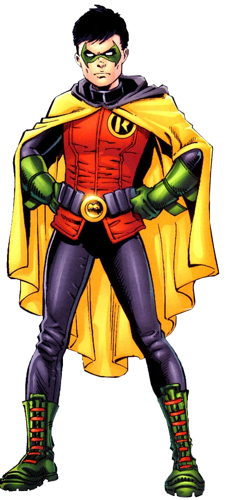

Criação do Robin
Robin é um personagem dos quadrinhos da DC Comics, conhecido por ser o parceiro
juvenil do Batman. Ele foi criado por Bob Kane, Bill Finger e Jerry Robinson,
fazendo sua primeira aparição em Detective Comics #38, lançado em 1940.
O Personagem Robin
Robin é o alter ego compartilhado por vários personagens ao longo da história
da DC Comics, mas o mais conhecido é Dick Grayson. Dick Grayson foi o primeiro
Robin e o parceiro original do Batman. Ele era um jovem acrobata que
testemunhou o assassinato de seus pais e foi adotado por Bruce Wayne,
o alter ego do Batman. Sob a orientação de Batman, Dick Grayson
treinou arduamente e se tornou um habilidoso lutador e detetive.
Com o passar dos anos, outros personagens assumiram o manto do Robin, incluindo
Jason Todd, Tim Drake, Stephanie Brown e Damian Wayne. Cada um desses Robins
trouxe suas próprias personalidades e habilidades para a parceria
com Batman, adicionando camadas à mitologia do personagem.
Quadrinhos Importantes do Robin
O Robin teve várias histórias importantes nos quadrinhos, explorando suas origens, sua evolução como herói e suas relações com Batman e outros membros da família Batman. Aqui estão alguns dos quadrinhos mais relevantes do personagem:
"Batman: A Death in the Family" (1988-1989):
Escrito por Jim Starlin e ilustrado por Jim Aparo, esta história apresenta a morte de Jason Todd, o segundo Robin, e teve um impacto significativo na mitologia do personagem.
"Batman: The Killing Joke" (1988):
Escrito por Alan Moore e ilustrado por Brian Bolland, esta história explora o relacionamento entre Batman e o primeiro Robin, Dick Grayson, enquanto eles enfrentam o Coringa em uma trama sombria e perturbadora.
"Batman and Robin" (2009-2011):
Escrito por Grant Morrison e ilustrado por vários artistas, esta série segue as aventuras de Dick Grayson como o novo Batman e Damian Wayne como o novo Robin, enquanto eles lutam contra o crime em Gotham City.
Adaptações em Outras Mídias
O Robin também apareceu em várias adaptações animadas, filmes e séries de TV, trazendo sua dinâmica com o Batman para diferentes formatos. Aqui estão algumas das mais notáveis:
Série de TV "Batman" (1966-1968):
O Robin, interpretado por Burt Ward, foi um dos personagens principais nesta série icônica que apresentou uma abordagem mais leve e cômica do Batman.
Série animada "Batman: The Animated Series" (1992-1995):
O Robin, com a identidade de Dick Grayson, apareceu nesta aclamada série animada, explorando sua parceria com Batman e suas próprias histórias individuais.
Filme "The Dark Knight Rises" (2012):
O personagem John Blake, interpretado por Joseph Gordon-Levitt, é introduzido como um jovem policial que se torna o herdeiro do legado de Batman.
Habilidades do Robin
O Robin, independentemente de sua identidade específica, possui habilidades atléticas e de combate aprimoradas. Aqui estão algumas de suas principais habilidades:
Acrobacias e Ginástica:
Como um ex-acrobata, o Robin possui habilidades acrobáticas e de ginástica excepcionais, permitindo que ele realize manobras complicadas e evite ataques.
Combate Corpo a Corpo:
Ele é treinado em artes marciais e possui habilidades de combate corpo a corpo, sendo capaz de se defender contra inimigos poderosos.
Inteligência:
Robin é um detetive habilidoso, capaz de resolver problemas complexos e investigar crimes ao lado de Batman.
Tecnologia e Equipamentos:
Ele tem acesso a uma variedade de dispositivos e equipamentos tecnológicos projetados por Batman, como o cinto de utilidades, que contém gadgets úteis para várias situações.
Conclusão
O Robin é um personagem fundamental do universo do Batman, trazendo uma dinâmica única como parceiro juvenil do Cavaleiro das Trevas. Ao longo dos anos, diferentes personagens assumiram o manto do Robin, cada um trazendo suas próprias histórias e habilidades para a parceria com Batman. Nos quadrinhos, filmes e séries de TV, o Robin deixou sua marca, explorando sua evolução como herói, suas relações com Batman e outros personagens e suas próprias aventuras solo. Com suas habilidades atléticas, combate corpo a corpo e inteligência, o Robin desempenha um papel vital na luta contra o crime em Gotham City, ao lado do icônico Batman.